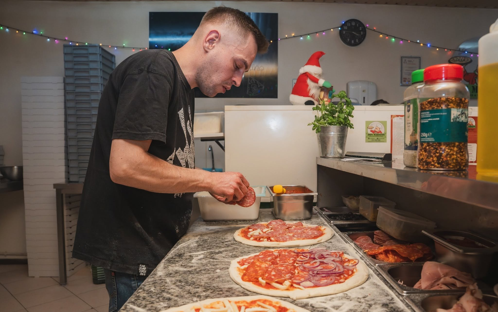
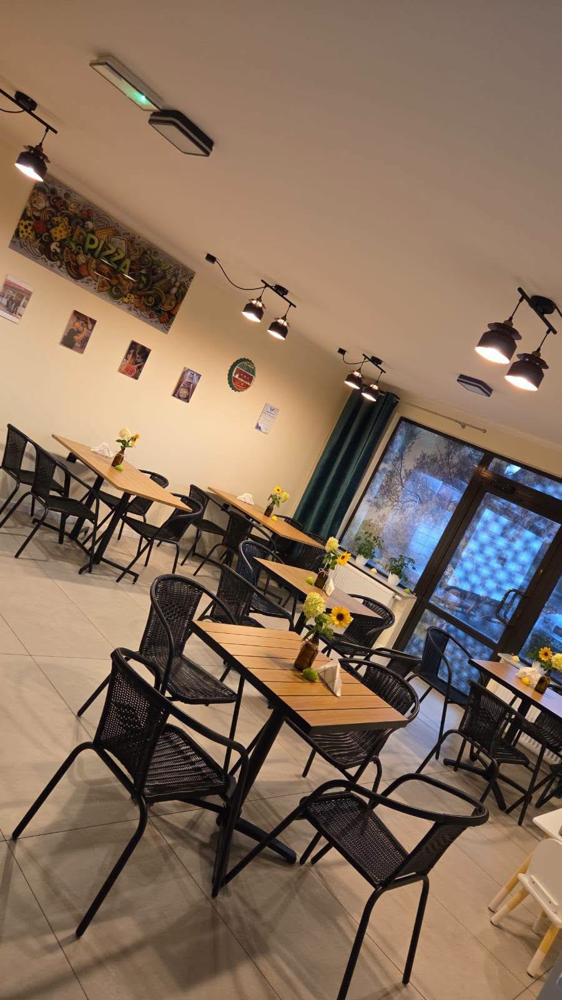
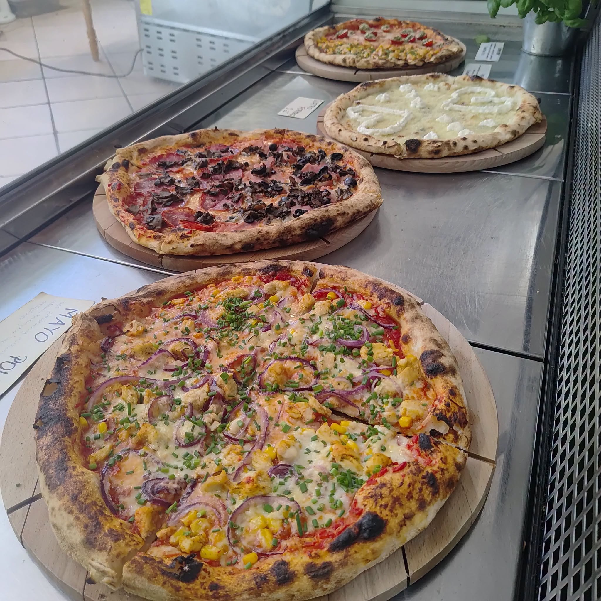
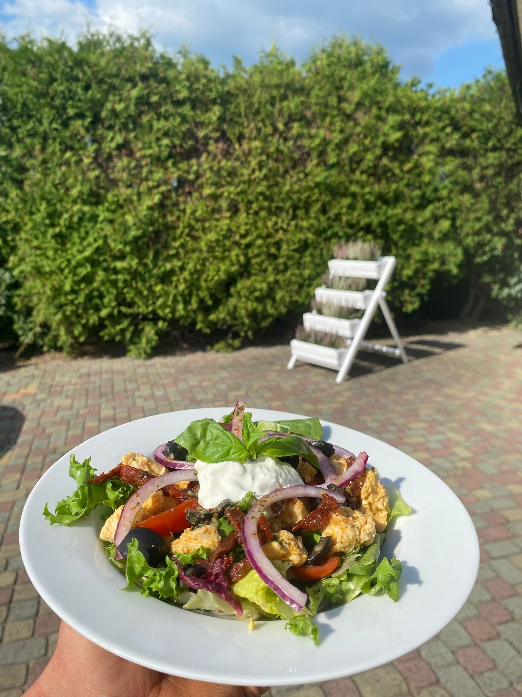
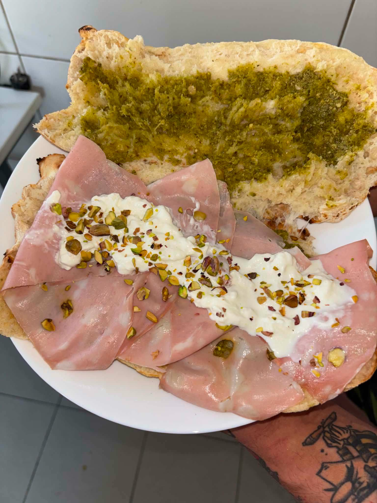
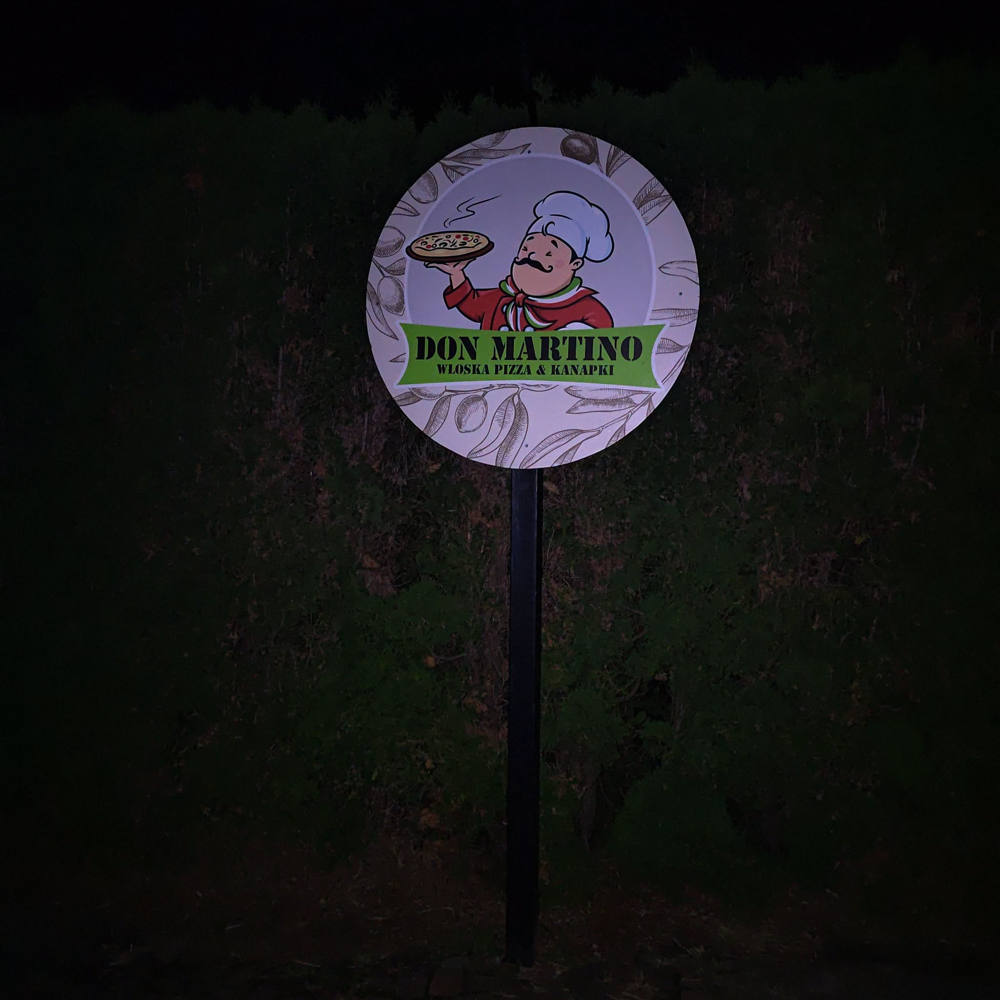

O NAS






Buongiorno!
Cześć! Jestem Marcin i jako pizzaiolo działam już kilka lat. To miejsce to moja „druga pizzeria”, a raczej lekko rozwinięte miejsce, które zaczęło się w „budzie” przy ulicy Jana Pawła II.
Powstało z pasji — wkładam w nie całe serce i mnóstwo czasu, by wraz ze swoimi współpracownikami serwować Wam jedzenie na najwyższym poziomie, w przystępnych cenach.
Stawiamy przede wszystkim na jakość, nie robimy masówki! Właśnie dlatego czasem trzeba „chwilę” poczekać na swoje zamówienie, ale zapewniam, że robimy co w naszej mocy, by wszystko było podane jak najszybciej, z zachowaniem odpowiednich standardów.
Zapraszam Was do skosztowania naszej specjalności. Wypiekamy hybrydę pizzy klasycznej z neapolitańską, na cienkim, długo dojrzewającym cieście, dzięki czemu nasza pizza jest lekka, puszysta i przyjazna dla brzuchów naszych Gości.
W ofercie mamy również pyszne włoskie kanapki z pieczywa własnego wypieku — panino i panuozzo — a także przystawki, sałatki, napoje oraz strefę 0%.
W menu każdej opcji znjaduje się słowniczek, z którego dowiesz się więcej o składnikach, których używamy do naszych dań.
Czasem zdarzy się, że ciasto kończy się szybciej, niż się tego spodziewaliśmy i nie ma możliwości szybkiego dorobienia, ponieważ musi swoje odleżeć i przejść poprawny proces fermentacyjny, byśmy mogli Wam je zaserwować — bez obaw o Wasze kubki smakowe i żołądki.
Dlaczego warto do nas wpaść?
Długo dojrzewające ciasto
Dajemy ciastu czas, dzięki czemu pizza jest lekka, puszysta, pełna smaku i bezpieczna dla Waszych brzuszków.
Jedno ciasto, wiele możliwości
Z naszego ciasta przygotowujemy nie tylko pizzę, ale również panino, panuozzo i pieczywo do naszych dań.
Włoskie inspiracje, nasz charakter
Włoskie smaki są dla nas inspiracją, ale najważniejsze jest tworzenie jedzenia, które sami chcemy jeść.
Menu
Na co masz dziś ochotę? Realizujemy zamównienia na miejscu, na dowóz i na wynos!
Pizza włoska
Pizza włoska
Nasza specjalność — hybryda pizzy klasycznej i neapolitańskiej na cienkim, długo dojrzewającym cieście. Włoski charakter, ale po naszemu.
Kanapki premium
Kanapki premium
- Pannino
- Panuozzo
Z tego samego ciasta robimy również panino i panuozzo. W środku znajdziesz włoskie składniki i konkretne porcje dobrego jedzenia.
Inne
Inne
- Przystawki
- Sałatki
- Napoje
Nie samą pizzą człowiek żyje. Mamy też przystawki, sałatki, napoje i coś dla tych, którzy wybierają strefę 0%.
Chcesz podarować komuś coś pysznego?
Możesz zakupić u nas BON na ulubioną pizzę lub kanapkę - to będzie zawsze trafiony prezent!